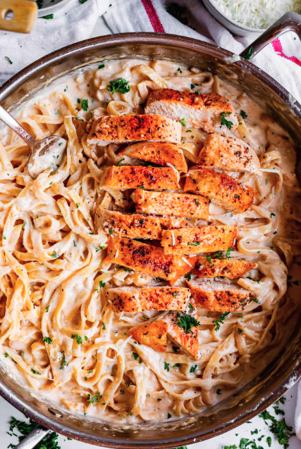

Fettucini Alfredo

Description
The people of this planet love a good alfredo dish. This is one that will discharge you out of earth
and into another dimension. Be careful making this because it will change your life!
Ingredients:
- 24 ounces of dry fettucin pasta
- 1 cup of butter
- 3/4 pint heavy cream
- 1 dash garlic salt
- 3/4 cup grated Romano cheese
- 1/2 cup grated Parmesan cheese
Steps:
- Boil a large pot of water.
- Add salt so that the noodles remain delicious.
- Add in the fettucini and let boil for 8-10 minutes so they're al dente!
- Grab a second pan to use for sauce.
- Melt the butter into cream on the pan.
- Add the salt, pepper, and garlic salt.
- Add cheese and stir until it is thickened.
- Make sure to strain those beautiful al dente noodles.
- Throw that delicious and juicy sauce into your pasta. Make sure to stir!
- Eat the pasta like there's no tomorrow because today might be all we have.